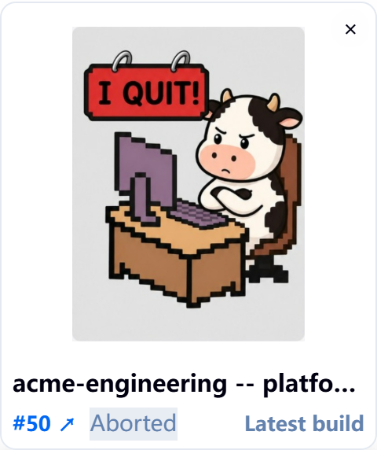
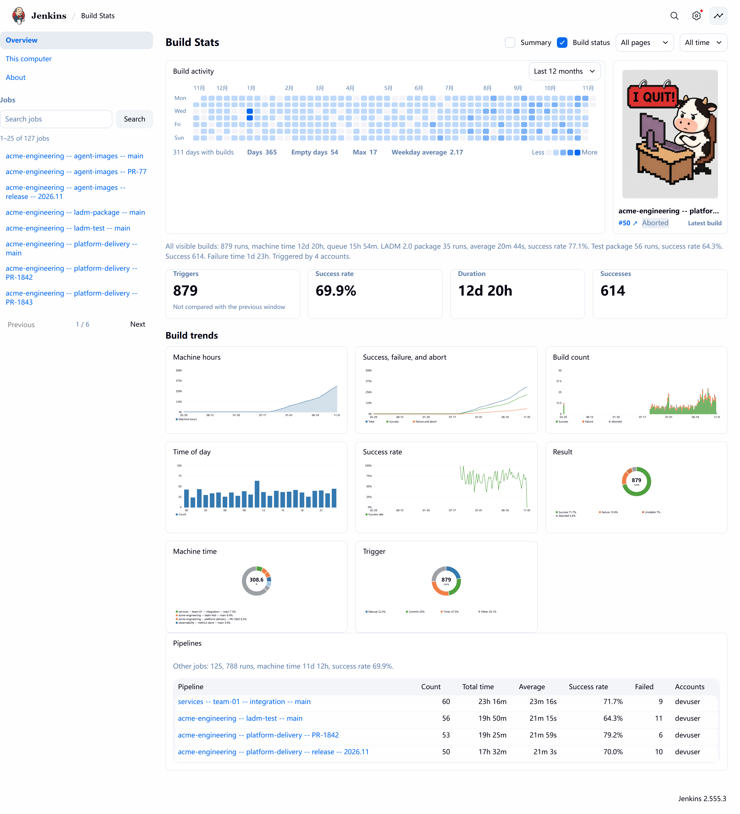
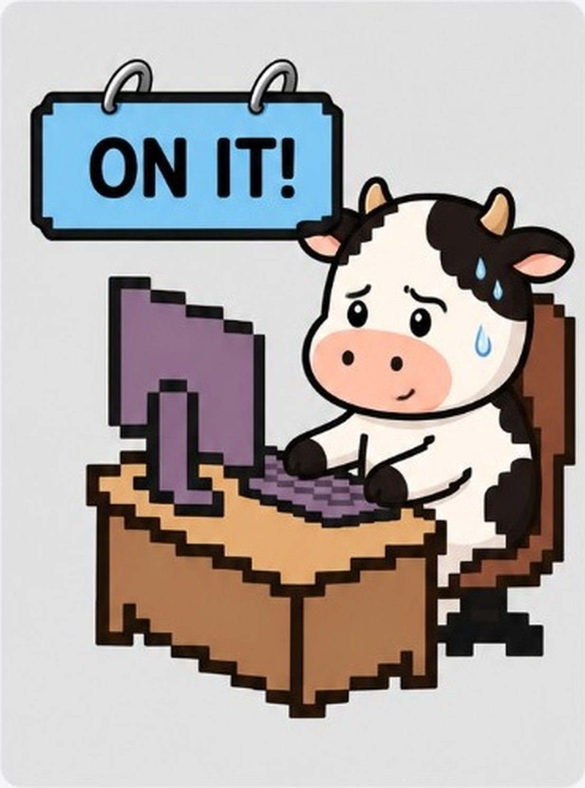
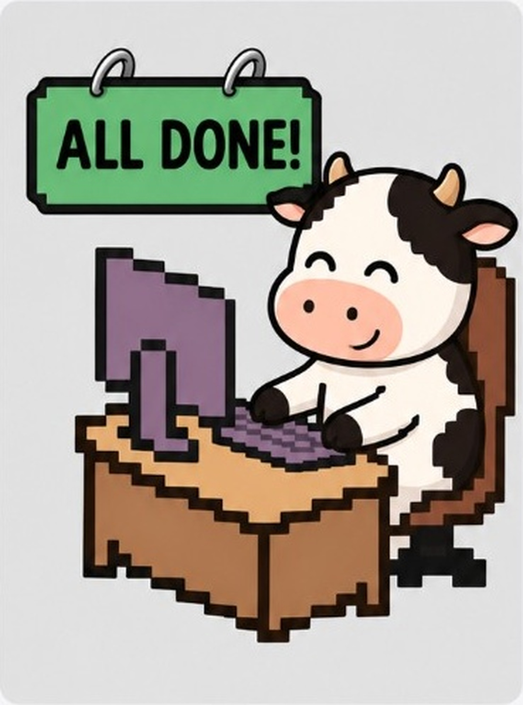
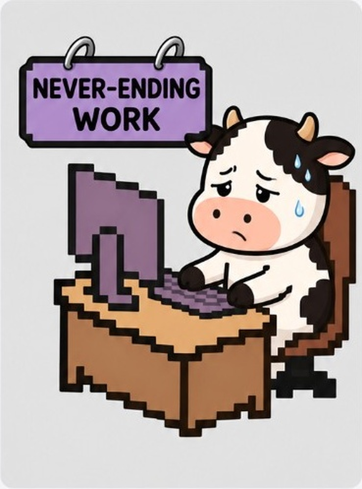
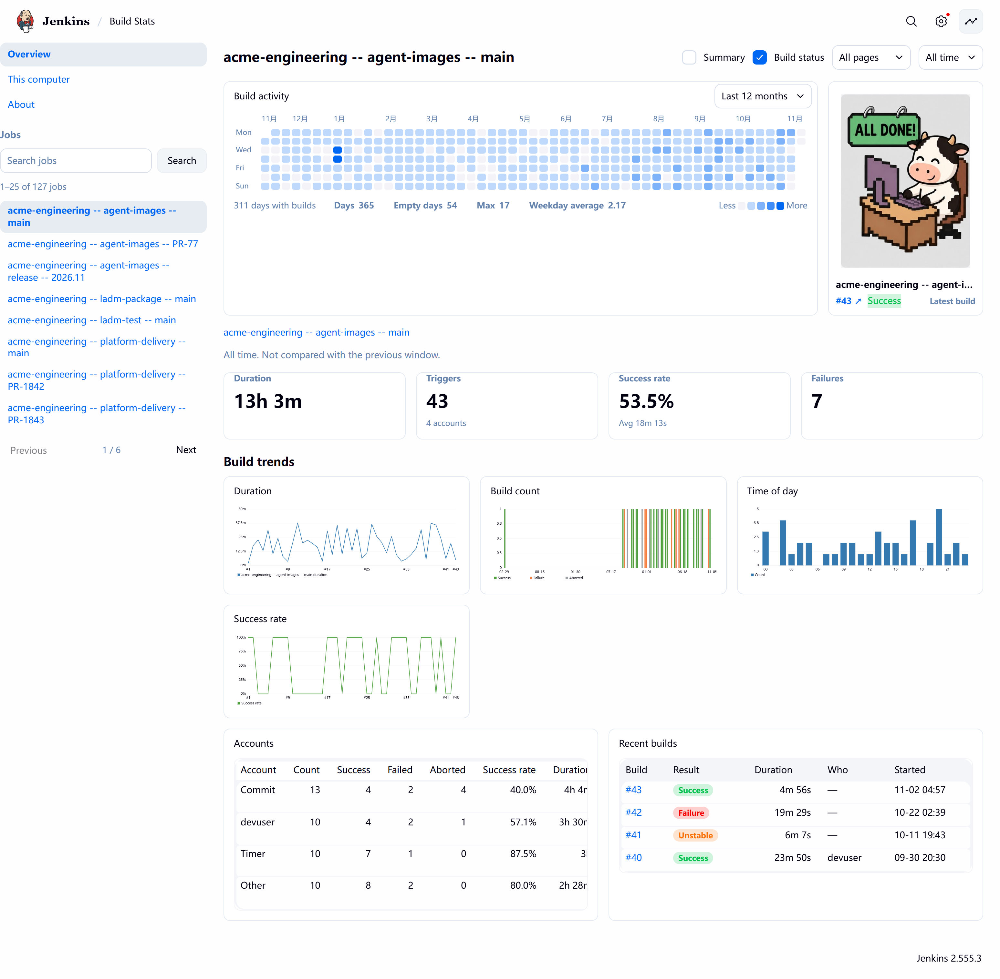
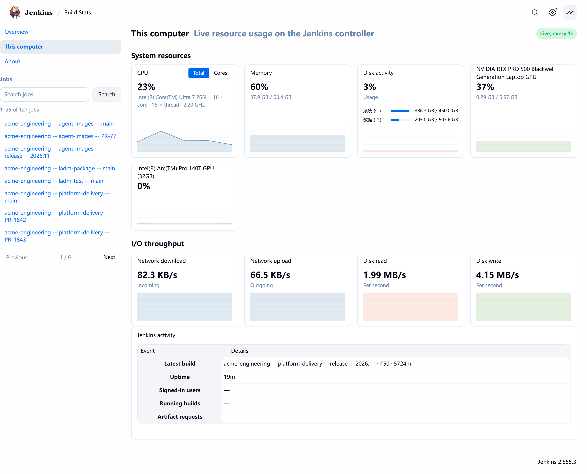
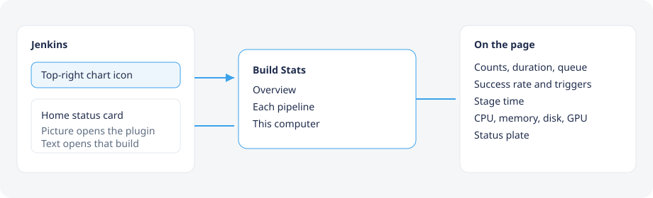

构建统计 Build Stats
当前账号能看到的构建，收成一页：次数、耗时、排队、成功率，以及流水线阶段耗时。
The builds you can see, on one page: counts, duration, queue time, success rate, and pipeline stage time.

总览Overview
一页看完你能看到的构建。点图看完整页面。
Everything you can see, on one page. Open the image for the full view.
- 热力图Heatmap 最近 12 个月。工作日平均不算周末。Last 12 months. Weekday average skips weekends.
- 趋势Trends 机器时间、成败、次数、时段、成功率、结果、触发方式。Machine time, outcome, count, time of day, success rate, result, trigger.
- 状态牌Plate 跟着这个范围内最新一次构建。Follows the newest build in this range.
- 范围Scope 只算当前账号能看到的构建。Only builds the signed-in account can see.


状态牌Status plates
总览和每条流水线都挂着这块牌子，跟着当前范围内最新一次构建变。
The overview and each pipeline carry this plate. It follows the newest build in the current range.
-

在干了ON IT!
正在构建Running
-

干完了ALL DONE!
成功Success
-

干不完NEVER-ENDING WORK
失败或不稳定Failure or unstable
-
不干了I QUIT!
中止或未构建Aborted or not built
一条流水线One pipeline
从左侧点进一条，看的就是它自己。
Pick one from the side. The page is only that pipeline.
- 四个数Four numbers 耗时、触发次数、成功率、失败次数。Duration, triggers, success rate, failures.
- 趋势Trends 这条流水线自己的耗时、次数和成功率。This pipeline's duration, count, and success rate.
- 阶段Stages 有 Stage View 数据时，才出现阶段耗时。Stage time appears only when Stage View data exists.
- 最近Recent 编号、结果、耗时、谁触发的。Number, result, duration, who triggered it.




这台电脑This computer
跑 Jenkins 的这台机器，不是某一条流水线。
The machine running Jenkins, not one pipeline.
- 资源Resources CPU、内存、磁盘、显卡。CPU 可在总量和每核之间切换。CPU, memory, disk, GPU. CPU switches between total and per core.
- 吞吐Throughput 网速和磁盘读写，每 1 秒刷新。Network and disk throughput, refreshed every second.
- 出现Shown 控制器是 Windows 才有这一页。Only when the controller runs on Windows.
从哪里进来How to open it
右上角的图进插件。首页右下角是同一块牌子。
The chart icon opens the plugin. The home card is the same plate.
- 牌子Card 可拖动、贴到右边、关闭。点图进统计，点字号开这次构建。Drag, dock, or close it. The picture opens Build Stats. The number opens that build.
- 时间Time 7 天、30 天、90 天、全部。默认全部。7 days, 30 days, 90 days, or All. All is the default.
- 说明Summary 默认不勾。勾上才出现次数、机器时间、排队和成功率。Off until checked. Then it shows runs, machine time, queue, and success rate.
- 状态牌Plate 默认勾选。首页和流水线都显示。选仅首页后，离开首页就收起。Checked by default, on the home page and on pipelines. Home only hides it after you leave home.

安装Install
- Jenkins 2.555.3 或更新。2.555.3 or newer.
- Java 控制器使用 21。21 on the controller.
- 页面Page /build-stats
- 产物Package target/build-stats.hpi
mvn package